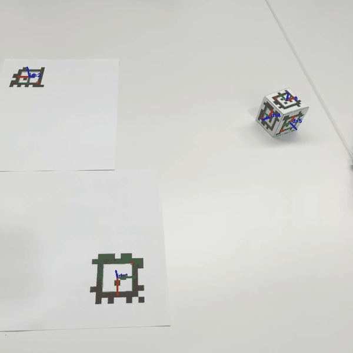
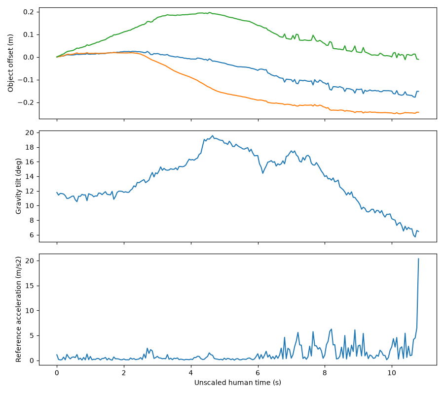
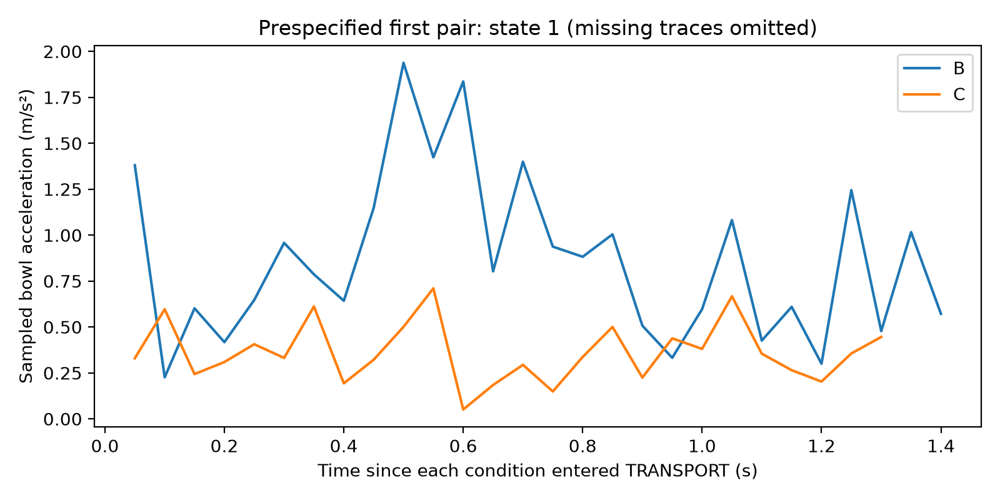
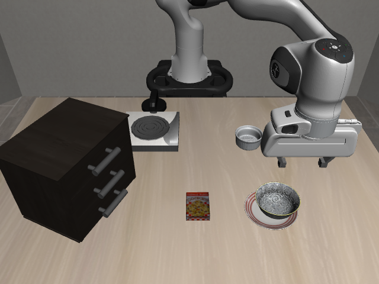

My role
I tested the idea by adding a “do not spill” constraint to a bowl-to-plate task in LIBERO. I recorded myself moving a tagged object with a phone camera, then recovered its position and orientation using AprilTags. I focused on object motion because hand tracking was less reliable when markers were hidden.
The final approach uses the demonstration to set acceleration and tilt limits, rather than asking the robot to follow the video's exact path. The pretrained model still chooses the carrying direction and destination. Guidance adjusts its commands during carrying, while shared controls handle grasp retention, placement, and release. The model weights are unchanged.
Matched comparison
I compared the original task, an instruction that the bowl contained liquid, and that same instruction with phone-derived movement limits. Acceleration and tilt were used as measurable proxies for spill risk; spilling itself was not simulated.
In the matched B/C comparison shown here, maximum sampled bowl acceleration fell from 2.1 to 0.63 m/s², a 69% reduction. Both runs completed placement. Maximum tilt stayed at approximately 14° because the original movement already kept the bowl reasonably upright.
Each case represents one run. The original-task run provides context, but its controller settings differ from the matched B/C runs. The acceleration limit acts on commanded movement; the reported results measure actual bowl motion, which can differ because of contact and robot dynamics.
Repeated tests and limitations
I then compared B and C across five additional starting states, using the same model and shared controller settings for each pair. Human guidance reduced acceleration in all four pairs that reached carrying. The fifth pair did not reach carrying and has no acceleration or tilt measurements.
| Metric | B: instruction only | C: human guidance |
|---|---|---|
| LIBERO task success | 4/5 | 2/5 |
| Successful placement after release | 4/5 | 1/5 |
| Mean maximum acceleration | 1.9 m/s² | 0.65 m/s² |
| Mean maximum tilt | 10° | 9.9° |
The mean maximum acceleration fell by 66%, while tilt remained similar. However, fewer completed placements mean the method has not yet achieved the full goal: careful movement and successful delivery.
Earlier experiments
Before testing movement limits, I adapted a recorded object path for a Panda arm and combined it with programmed grasping and placement. This completed all six tested bowl-start positions, with no retries, and achieved a path-tracking error of approximately 1.9 mm.
I recorded three successful runs, producing approximately 6,300 observation–action pairs. Two small models fitted the recorded actions but failed to reproduce the task: the single-action model completed 0/2 tests, and the action-sequence model completed 0/1. This led the project towards guiding a pretrained model at execution time.
What I would test next
I would first extend the time allowance without changing the controls, recording success both before and after the original deadline. This would separate timeouts from placement failures.
I would then compare movement at matched carrying durations to check whether the acceleration reduction comes from the guidance itself or simply from slower execution. A liquid simulation or physical test would be needed to assess spilling directly.